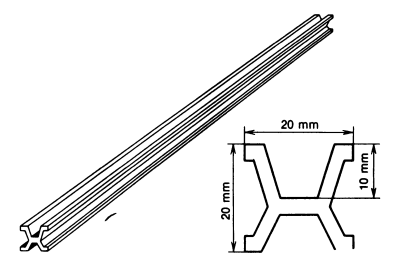
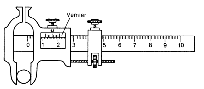
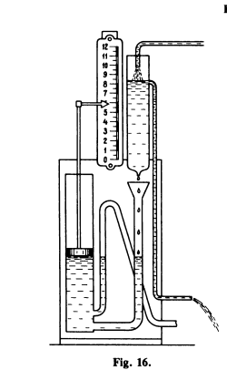
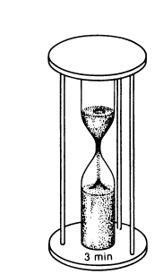

The base unit of length is a metre (m). Initially, the standard metre was taken as the distance between two marks on a specially made platinum-iridium rod of length 102 cm, which is stored at the International Bureau of Weights and Measures near Paris (Fig. 14). The material and shape of the rod, as well as the conditions in which it was stored, were chosen so as to ensure the invariability o f the sample in the best possible way. In par ticular, measures were taken to maintain a constant temperature of the rod. Meticulously prepared secondary standards, viz. copies of this sam ple, are stored at institutes of weights and measures in many countries. It was planned to choose 1/40000000 of the length of the Earth’s meri dian as the standard metre. However, when it turned out that the precision of measurements on the surface of the Earth was insufficient, it was decid ed not to replace the existing standard or introduce corrections on the basis of more accurate measurements, but preserve the sample as the unit of length. This sample is about 0.2 mm shorter than 1/40000000 of the Earth’s meridian.
Fig. 14:The former standard metre (general view and cross section).
Besides this base unit, other units are also used in science and engineer ing, which are larger or smaller than metre by factors of ten: 2 kilometre (1 km = 1000 m); centimetre (1cm = 0.01 m); millimetre (1 mm = 0.001 m); micrometre (1 jnn = 0.001 mm = 0.000001 m); nanometre (1 nm = 0.000000001 m). 2 Decimal multiples and fractional units, as well as their notations, are formed with the help of factors and prefixes, e.g., 109 — giga (G), 106 — mega (M), 103 — kilo (k), 102 — hec- to (h), 1 0 "1 — deci (d), 10" 2 — centi (c), 10"3*— milli (m), 1 0 "6 — micro (/*), 10"9 — nano (n). — Eds.
In Great Britain, the USA and some other countries, the so-called British units of length are still widely used: 1 inch = 25.4 mm; 1 foot = 12 inches = 304.8 mm; 1 statute mile = 1609 m; 1 nautical mile = 1852 m (the length of the one-minute arc of the Earth's meridian). The fact that there exists a great number of units of length (as well as units for other physical quantities) presents difficulties in practical calcula tions. For this reason, the international standard definitions of units for all physical quantities have been worked out. The set of these definitions is called the S I system o f units (for the French S ystim e International). This system is used in science and technology in many countries throughout the world.
In this system of units, a metre is defined as the length equal to 1650763.73 wavelengths of the orange line emitted by a special lamp in which the krypton-86 gas glows under the action of electric discharge.3 The number of wavelengths is chosen so that this unit of length coincides to the greatest possible extent with the standard metre stored in Paris. For this reason, the unit of length was not chosen in such a way as to contain a round integral number of wavelengths (say, a million). This new unit can be reproduced (optically) to a higher degree of accuracy than the previous standard metre. It is very convenient that there is no need to resort to a uni que sample to reproduce the unit of length. It is sufficient to make a special krypton lamp and observe the light emitted by it.To measure length in practice, including the distance between two posi tions of a point on its trajectory, copies of secondary standards are used, viz. rods, rulers or tape measures that are equal to the length of the stan dard or of its parts (centimetres, millimetres). The zero of the ruler is made to coincide with one end of the segment being measured and the division standing against its other end is marked. If the second end does not coin cide with any division on the scale, then one should approximately deter mine the fraction of a division corresponding to this end.
Fig. 15: Vernier caliper.
Various auxiliary attachments are used to reduce inevitable errors in measurements. Figure 15 shows one o f such attachments, viz. a vernier caliper. The vernier is an additional scale sliding along the main scale. The divisions o f the vernier are smaller than the divisions of the main scale by 0.1 o f their length. If, for example, the division of the main scale is 1 mm, the division o f the vernier has the length o f 0.9 mm. It can be seen from the figure that the diameter o f the ball being measured is larger than 11 mm but smaller than 12 mm. In order to find the number o f decimal fractions of a millimetre in the remaining part of the division, we must find out the vernier division which coincides with one o f the divisions of the main scale. In the figure, it is the ninth division o f the vernier. This means that the eighth, seventh, etc.
The choice of the unit of time can be made on the basis of the duration of some recurring process. From ancient times, the duration of one complete rotation of the Earth about its axis relative to the Sun (a day) was taken as a unit of time. Since the duration of this rotation slightly differs during a year (almost by 1 min), we take for the unit of time the average value of this quantity over a year. Days are divided into hours, minutes and seconds. The second (s) is one of the base units in SI. It is defined as the time in terval equal to the sum of 9 192631 770 periods of radiation corresponding to the transition between two definite energy levels in the cesium-133 atom. The second is approximately equal to 1/86400 of the mean solar day. Various recurring processes can be used for constructing timepieces, viz. the instruments for measuring time intervals.
In old times, clepsydras (water clocks) were used, in which time was determined from the amount of water flowing from one vessel to another (Fig. 16). The duration of the same time interval was reproduced with the help of a sand glass in which a definite amount of sand runs through a nar row tube (Fig. 17). The accuracy of these instruments is not high. Various oscillatory processes, like oscillations of a pendulum, viz. a load suspended by a thread or rod (wall clock pendulum), recur with a much higher accuracy. If the amplitude of a swinging pendulum is not verylarge, the period of oscillations (the time of a swing from an extreme posi- lion to and fro) practically does not depend on the amplitude and is deter mined only by the pendulum length. The fact that the period of oscillations of a pendulum is independent of the amplitude was established by the Italian physicist and astronomer Galileo Galilei (1564-1642) and was later used by the Dutch physicist and mathematician Ch. Huygens (1629-1695) who created the first pendulum clock in 1657. In this clock, oscillations are counted with the help of a system of wheels. After each oscillation, the hands of the clock turn through a certain angle so that the time interval can be determined by the change in the positions of the hands.
Fig. 15:Clepsydra.
Fig. 15: Sand glass.
Later, a pocket watch was invented. In this instrument, the oscillating pendulum is replaced by a wheel which is attached to a spiral spring (so- called balance-wheel) and oscillates relative to the axle about the equilibrium position at a constant period determined by the properties of the balance-wheel, or the spiral spring. A stopwatch, i.e. the watch started and stopped by pressing a button, is especially convenient in practice. It has a long hand making a revolution per minute, which enables one to measure decimal fractions of a second on the dial plate.
IAfter clocks with a pendulum (and later with a balance-wheel) had been invented, all other types of mechanical clocks became obsolete as less accurate. However, the sand glass is still in use, for example, in medicalpractice for such treatments (baths and others), where only one definite time interval has to be counted. The dropping bottle and stroboscope described in Sec. 1.6 are also a kind of clock. In modern technology, time intervals are measured with increasingly high accuracy with the help of oscillating quartz crystals (quartz clock) or vibrations of molecules (molecular clock). Quartz and molecular clocks make it possible to measure time intervals to within 10“ 6, 10“ 9 and even 10” 12 fractions of a second.